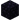
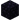

Les ressources dans minecraft permettent aux joueurs de progresser dans leur aventure en mode survie pour pouvoir avoir des outils, armes et armures. Cela permet au joueur de se protéger ou de casser les différent type de bloc qui sont disséminer dans le monde. Pour cela les joueurs devra explorer ou miner pour les obtenirs
La nourriture: elle permet au joueur de survivre en mode survie chaque nourriture possède sa propre saturation et satiété pour éviter de perdre de la vie et pour permettre au joueur d'en récupérer si il en a perdu. La nourriture peut etre récuperé via la récolte ou alors via la chasse.
Les matériaux: Ils permettents au joueur de forger des armes et armures pour se défendre ou alors chasser pour avoir d'autre matériaux, on peut créer des outils avec les différent matériaux (bois, pierre, fer, diamand et or) pour récolter des blocs possédant différent niveau de minage.
Nourriture
Le pain: une nourriture obtenable grâce a l'agriculture en faisant pousser du blé il vous
faut 3 blés dans une table de craft pour obtenir 1 . Il restaure 5 demi-gigot (5 points de nourriture)
dans une table de craft pour obtenir 1 . Il restaure 5 demi-gigot (5 points de nourriture)  et 6 points de saturation
et 6 points de saturation
Le poisson: une nourriture obtenable
grâce a la pêche crue, il restaure 2 point de nourriture soit et 0.4 de saturation. Il peut être cuit dans un four avec un combustible
pour obtenir de la morue cuite qui donne 5 point
de nourriture et 6 point de saturation. La morue crue peut
être utiliser pour approvoiser un ocelot.
Le gâteau: cette nourriture n'est pas
disponible a l'état naturel, le joueur doit assembler les différents composant du gâteau pour pouvoir
l'obtenir, c'est aussi la seul nourriture qui ne se consomme pas a la main il faut donc le poser au sol et
faire un clique droit dessus pour consommer 1 part soit 2 point de nourriture et 0.4 de saturation, pour un total de 7 parts de gâteaux donc 14 point de nourriture et de 2.8 point de saturation. Sa recette est la suivante: 3
sceaux de lait, 1 oeuf, 2 sucres et 3
blés
Matériaux
Le bois: C'est avec cette ressource que nous débutont sur le jeu, car elle est a la base de tous craft sur le jeu, avec elle on peut faire des outils, armes, barrière pour protéger les champs, un abris de fortune et même du combustible. Si on met du bois dans le four, on peut soit l'utiliser comme combustible soit transformer une buche en charbon de bois qui est l'équivalent du charbon.
la pierre : ou alors son autre nom: la cobblestone est une
ressource qui permet de créer des outils et armes plus puissant que ce en bois pour pouvoir récuperer le
minerais de fer, elle sert a créer un élément
essentiel a la survie sur Minecraft la création de four pour
obtenir des lingo de fer et autre métaux ou alors cuire ses aliments pour obtenir plus de point de
nourriture et saturation ou même annuler les effets nefaste de certains aliments. On peut aussi mettre de la
cobblestone et un combustible dans un four pour avoir de la
pierre qui possède les même propriété que la
cobblestone mais sert surtout a faire de la décoration.
: ou alors son autre nom: la cobblestone est une
ressource qui permet de créer des outils et armes plus puissant que ce en bois pour pouvoir récuperer le
minerais de fer, elle sert a créer un élément
essentiel a la survie sur Minecraft la création de four pour
obtenir des lingo de fer et autre métaux ou alors cuire ses aliments pour obtenir plus de point de
nourriture et saturation ou même annuler les effets nefaste de certains aliments. On peut aussi mettre de la
cobblestone et un combustible dans un four pour avoir de la
pierre qui possède les même propriété que la
cobblestone mais sert surtout a faire de la décoration.
Le charbon: cette ressource se trouve a
l'état naturel sous forme de minerais de charbon qui se récolte avec l'aide d'une pioche de tous niveau de minage. C'est l'un des minéraux les plus commun sur le jeu et on le
trouve assez fréquement
partout dans les grottes et même à la surface. Cette
ressource sert de combustible ou alors à la confection de torche pour éclairer les zones sombre dans les
grottes lors d'exploration. Mais ce pendant elle reste une ressources crucial dans l'aventure car elle
permet de faire fondre du minerais de fer ou
du minerais d'or  ainsi passer au
niveau suppérieur.
ainsi passer au
niveau suppérieur.
Le fer : cette ressource se
trouve a l'état naturel sour forme de minerais de fer on la
trouve uniquement en profondeur dans des grottes. Elle permet de créer des outils, armes et armures de
qualité intermédiaire. Elle permet de miner l'or et le diamand sans perdre la ressource. Pour obtenir un
lingo de fer il faut placer un minerais de
fer et un combustible (exemple: du
charbon) dans un four.
: cette ressource se
trouve a l'état naturel sour forme de minerais de fer on la
trouve uniquement en profondeur dans des grottes. Elle permet de créer des outils, armes et armures de
qualité intermédiaire. Elle permet de miner l'or et le diamand sans perdre la ressource. Pour obtenir un
lingo de fer il faut placer un minerais de
fer et un combustible (exemple: du
charbon) dans un four.
le diamand : cette ressource est a la fois
rare est la plus avancé du jeu, on la rencontre sour la forme de minerais de diamand et pas avant la couche 12, il est
conseiller de miner vers la couche 11 pour avoir plus de chance d'avoir du diamand. Une fois récuperé on
peut faires des armes, armures et outils. Son niveau de minage permet de miner et récuperer l'obsidienne
pour soit aller dans le nether soit créer une table d'enchantement
: cette ressource est a la fois
rare est la plus avancé du jeu, on la rencontre sour la forme de minerais de diamand et pas avant la couche 12, il est
conseiller de miner vers la couche 11 pour avoir plus de chance d'avoir du diamand. Une fois récuperé on
peut faires des armes, armures et outils. Son niveau de minage permet de miner et récuperer l'obsidienne
pour soit aller dans le nether soit créer une table d'enchantement pour pouvoir enchanter les
outils, armes et armures.
pour pouvoir enchanter les
outils, armes et armures.